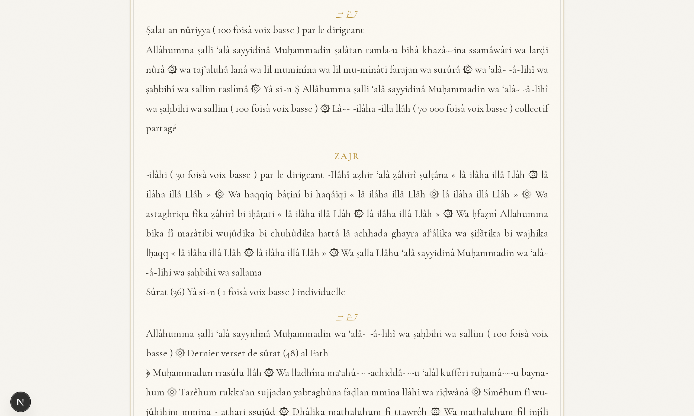
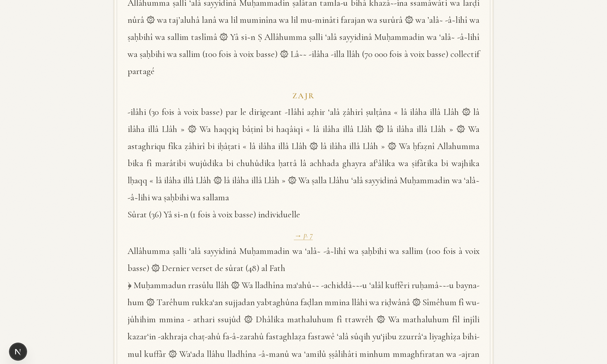
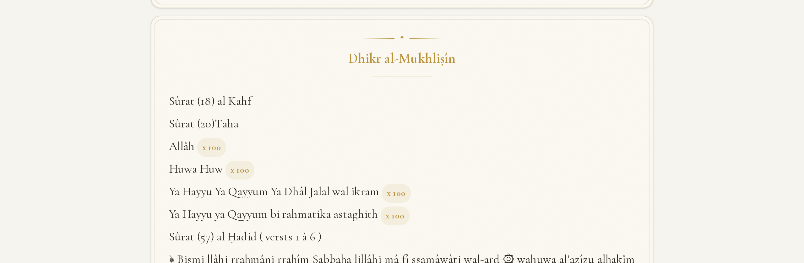
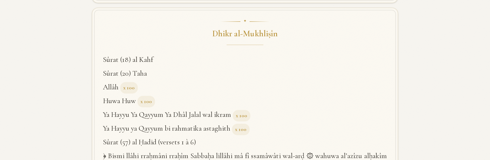

Étape 1 validée : resserrage des parenthèses collées ou mal espacées. Captures réalisées avant puis après l’application des corrections, directement dans le lecteur du site.
Cliquez sur une image pour l’ouvrir en pleine résolution. La ligne corrigée est cadrée au centre de chaque capture.


Capture longue : tout le corps du chapitre Al-Fidya, avec ses huit lignes concernées.


Mêmes types de corrections — parenthèses resserrées — appliqués dans les chapitres suivants du cahier et du samâ‘ :
| Chapitre | Pages | Correction |
|---|---|---|
| Laṭîf al-Kabîr | p. 43–45 | ( Coran entier à lire ) → (Coran entier à lire) |
| Waẓîfa avant le Fajr | p. 55–57 | Sûrat ( 1 ) → Sûrat (1) |
| Waẓîfat an-Nachr | p. 61–64 | Sûrat ( 1 ) → Sûrat (1) · en-tête ( Waẓifa du Rayonnement ) → (Waẓifa du Rayonnement) |
| Waẓîfa de voyage | p. 65–67 | Sûrat ( 1 ) → Sûrat (1) · en-tête ( invocations de voyage ) → (invocations de voyage) |
| Iftitâḥ as-Silka · Iftitâḥ Dalâ’il | p. 68–69 | Sûrat ( 1 ) et Sûrat ( 2 ) → Sûrat (1) / Sûrat (2) |
| Khatm as-Silka | p. 70–75 | Sûrat ( 1 ) et Sûrat ( 2 ) → Sûrat (1) / Sûrat (2) |
| Dhikr an-Nachr | p. 87 | Sûrat ( 1 ) → Sûrat (1) · en-tête ( invocations pour les ateliers ) → (invocations pour les ateliers) |
| Samâ‘ — chant n°147 | p. 304 | ( jamâluhul ‘ajîb ) x2 → (jamâluhul ‘ajîb) x2 · ( nuzhatul ‘uchchâq ) x2 → (nuzhatul ‘uchchâq) x2 |
| Al-Burda | p. 109–126 | Nettoyage technique d’une ligne dupliquée dans les données — aucun changement visible à l’écran |
Note sur les en-têtes entre parenthèses. Les trois en-têtes internes du cahier — « Waẓifa du Rayonnement », « invocations de voyage » et « invocations pour les ateliers » — ont aussi été resserrés. Leur règle de reconnaissance a été mise à jour en même temps : ils s’affichent toujours en tête de chapitre (centré, majuscules), ce qui a été vérifié dans le lecteur.
Les notations musicales du samâ‘ — « ( DA R I J A ) », « ( S WS ) » — n’ont volontairement pas été modifiées : ce sont des marqueurs rythmiques, pas des parenthèses de texte.